Tanggal Project: Juli 2023 - Agustus 2023
Alat dan Perangkat Lunak yang Digunakan: HTML, CSS, PHP, WORDPRESS, Bootstrap
Link berita: Penguatan Profil Desa Babadan melalui website oleh Mahasiswa MMD UB
Detail Project:
Berdasarkan aktivitas yang telah terealisasi, yakni "Peningkatan Citra Kelurahan melalui Rancangan dan Implementasi Situs Web Kelurahan Babadan," yang dilakukan di lingkup Kantor Kelurahan Babadan, kami bertujuan untuk meningkatkan pemberian layanan yang lebih merata, efisien, dan efektif dengan menghidupkan situs web Kelurahan Babadan serta menyajikan informasi seputar profil kelurahan, berita terkini, dan layanan masyarakat yang ada di wilayah Kelurahan Babadan. Dampak dari penyusunan program ini terlihat dalam ilustrasi di bawah ini:
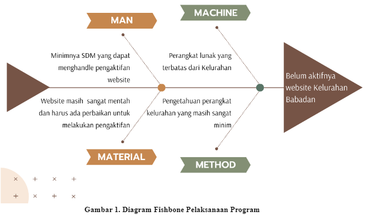Kegiatan awal dalam proses Pengembangan Draft dan Situs Web Kelurahan Babadan dimulai pada hari Selasa, 4 Juli 2023. Pada hari tersebut, langkah pertama yang diambil adalah melakukan evaluasi terhadap situs web yang ada, merancang draf profil kelurahan, dan melanjutkan dengan sesi diskusi bersama aparat pemerintah Kelurahan Babadan. Tujuan dari diskusi ini adalah untuk mengidentifikasi konten apa saja yang perlu diunggah ke situs web kelurahan. Tindak lanjut dari kegiatan tersebut terjadi pada hari Rabu, 5 Juli 2023. Pada hari ini, fokus beralih ke koordinasi program kerja bersama aparat kelurahan. Tujuannya adalah untuk menggambarkan visi dan misi yang mengarah pada penguatan tata kelola pemerintahan kelurahan, suatu upaya yang telah dicanangkan sebelumnya. Evaluasi terhadap struktur organisasi dan prosedur operasional kelurahan juga dilakukan, khususnya pada bagian-bagian yang belum diubah ke bentuk digital. Tugas ini menjadi salah satu hal yang harus diselesaikan dalam waktu dekat.
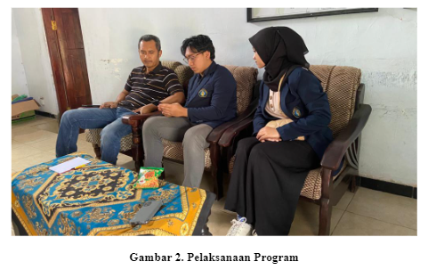Pada hari Kamis, 6 Juli 2023 kami telah menyelesaikan struktur organisasi tata kerja pemerintah Kelurahan Babadan sehingga dapat diupload pada website yang akan kami aktifkan. Tujuan dari pembuatan struktur organisasi tata kerja pemerintahan ini adalah untuk mengetahui pembagian tugas yang berada di lingkungan Kelurahan Babadan. Selain itu, supaya pembagian dan penjelasan dalam menjalankan tugas lebih mudah dan terkendali yang menempatkan individu-individu yang sesuai dengan potensi dan kompeten yang terlibat pada kelurahan.
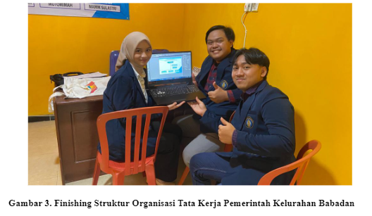Setelah dilakukan finishing terhadap struktur organisasi tata kerja pemerintah Kelurahan Babadan, kami mulai melakukan pembuatan website menggunakan VSS atau biasa disebut VS Code. Visual Studio Code atau VS Code adalah pengedit kode bersifat open-source yang membantu para developer menuliskan kode dengan cepat. Ia diciptakan dan dipelihara oleh Microsoft Corporation. Dengan VS code kami membuat terlebih dahulu desain website dan juga demo website menggunakan Bahasa pemrograman sederhana antara lain : HTML, CSS dan Javascript. Disamping itu kami juga menggunakan suatu library untuk memudahkan kami membuat desain web yang sesuai dengan sudah ditentukan, Library tersebut antara lain: Bootstrap dan sebelum keseluruhan data dan desain website kita terbitkan secara online.
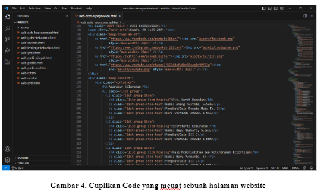Seminggu setelah itu, pada hari Senin, 24 Juli 2023 telah dilakukan penguploadan website di URL Kelurahan Babadan sehingga sudah mulai dapat dilihat di internet. Masih terus dilakukan penambahan informasi dan pembenahan dalam tampilan website sehingga pada hari Jum’at, 28 Juli 2023 telah dilakukan review serta finalisasi dari website Kelurahan Babadan yang telah kami aktifkan. Website Kelurahan Babadan dapat di akses melalui link http://kel-babadan.blitarkab.go.id/. Finalisasi ini juga telah diresmikan oleh salah satu perangkat kelurahan yakni Bapak Bayu Reghard, S.Sos. selaku Sekretaris Keurahan Babadan.
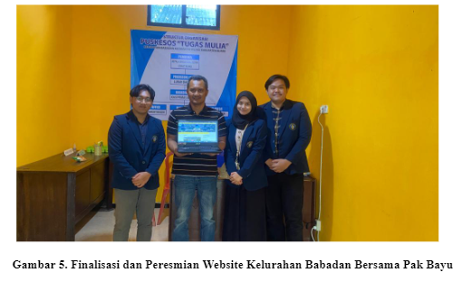Berikut tampilan website kelurahan babadan sebelum dilengkapi oleh Mahasiswa MMD:
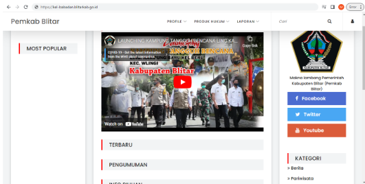 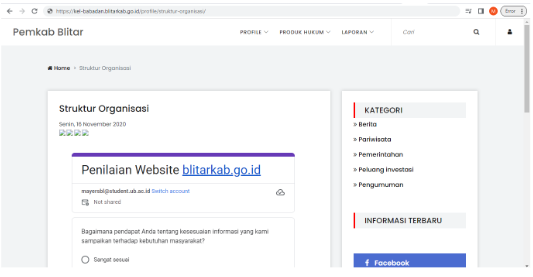 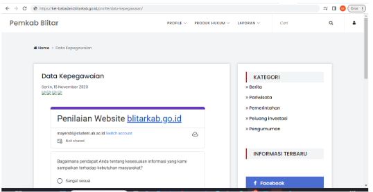Berikut beberapa tampilan yang terdapat di website Kelurahan Babadan. Semua materi dan gambar kami ambil secara personal dengan izin dari masyarakat dan pihak kelurahan:
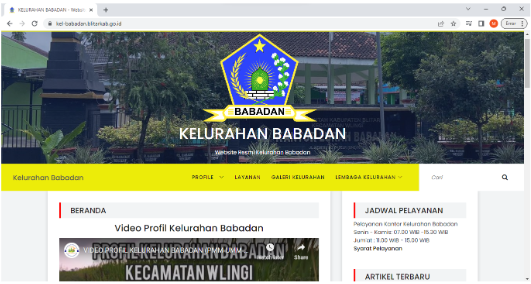 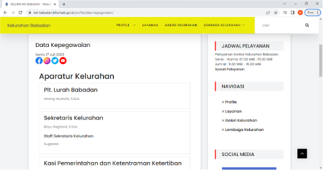Di tahap Pelaksanaan terakhir, agar pihak dari aparatur kelurahan dapat secara pribadi mengedit websitenya secara mandiri agar konten konten baik itu dari segi artikel, berita, profil kelurahan dan layanan kelurahan lebih dinamis seiring berjalannya waktu sesuai dengan keadaan yang terbaru maka saya dan Satya melakukan dan membuat sebuah video pelatihan cara mengedit website tersebut agar sesuai dengan yang diinginkan. Video pelatihan tersebut berdurasi sekitar 27 menit. Isi dari dari Video pelatihan tersebut cukup lengkap mulai dari cara login ke dashboard admin websitenya, mengedit konten yang sudah ada, hingga cara menambahkan artikel/berita.
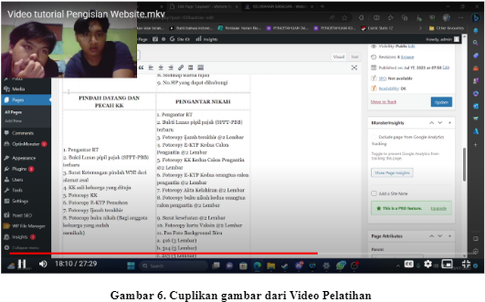Proses Pemantauan dan Evaluasi digunakan untuk mengukur keberlangsungan serta konsistensi pencapaian dari inisiatif "Mahasiswa Membangun Desa" (MMD) setelah pelaksanaannya. Setelah peluncuran situs web, kami secara rutin memantau tanggapan dan interaksi masyarakat terhadap konten yang dipublikasikan. Kami juga melakukan evaluasi untuk menilai sejauh mana program ini tetap mencapai tujuannya dengan konsisten. Selama tahap pemantauan, kami mengamati bahwa situs web berjalan dengan lancar dan mendapatkan respon positif dari penduduk setempat. Kelurahan, khususnya melalui perwakilan Pak Budi, menyatakan kepuasannya terhadap digitalisasi profil kelurahan dan peningkatan akses informasi melalui platform online. Hal ini mencerminkan keberhasilan program MMD dalam memberikan manfaat bagi komunitas. Prestasi ini terbukti dari banyaknya orang yang telah mengunjungi dan menggunakan situs web Kelurahan Babadan serta memberikan saran untuk menambah informasi dari pihak kelurahan. Kendati demikian, kelangsungan keaktifan situs web akan semakin nyata ketika kelurahan secara aktif menghadirkan konten baru. Namun demikian, dalam perjalanannya, program ini juga menghadapi tantangan, seperti minimnya sumber daya manusia dan pengetahuan pihak kelurahan mengenai aspek teknis pengelolaan situs web. Hal ini berpotensi mengakibatkan kesalahan pada tata kelola situs serta kurangnya teliti dalam pengembangan kode. Kendala-kendala ini menegaskan pentingnya pemeriksaan menyeluruh pada setiap tahap pembuatan situs web, dan mendemonstrasikan perlunya pemeliharaan berkala untuk menjaga kesinambungan dan kualitas program, termasuk dengan menyediakan video tutorial tentang pengeditan situs web yang telah kami susun